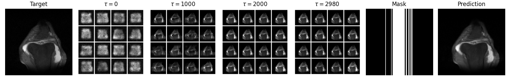
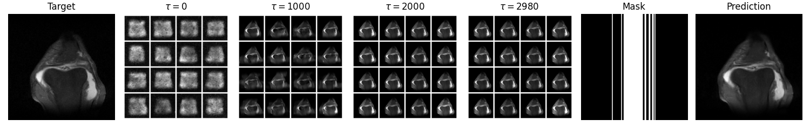
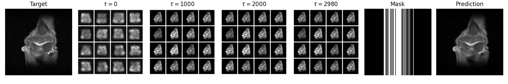
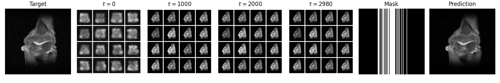
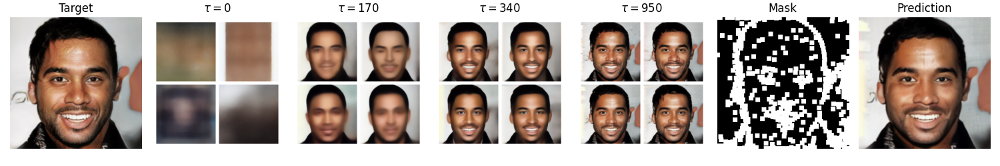
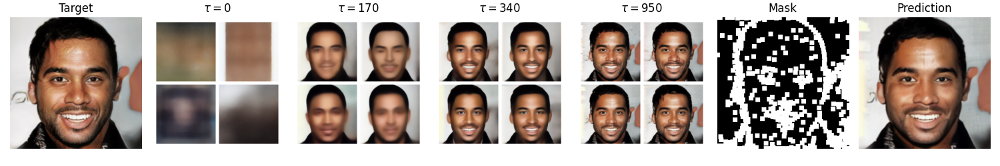
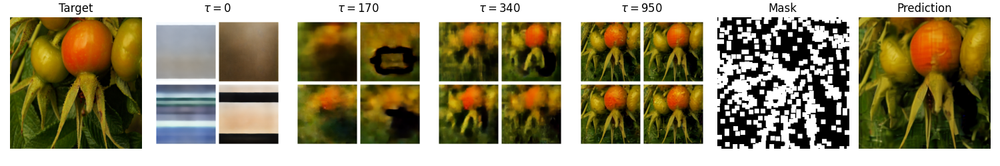
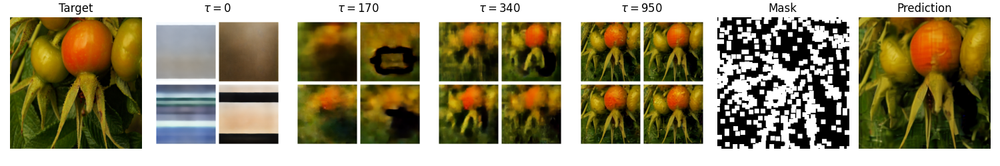
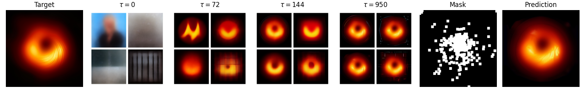
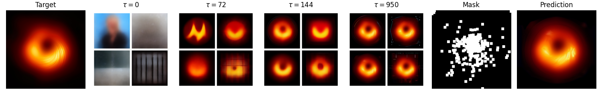

Subsampling is commonly used to mitigate costs associated with data acquisition, such as time or energy requirements, motivating algorithms for estimating the fully-sampled signal of interest x from partially observed measurements y. In maximum-entropy sampling, one selects measurement locations that are expected to have the highest entropy, so as to minimise uncertainty about x. This approach relies on an accurate model of the posterior distribution over future measurements, given the measurements observed so far. Recently, diffusion models have been shown to produce high quality posterior samples of high-dimensional signals using guided diffusion algorithms. In this work, we propose Active Diffusion Subsampling (ADS), a method for performing active subsampling using guided diffusion in which the model tracks a distribution of beliefs over the true state of x throughout the diffusion process, progressively decreasing its uncertainty by choosing to acquire measurements with maximum expected entropy, and ultimately generating the posterior distribution p(x | y). ADS can be applied using pre-trained diffusion models for any subsampling rate, and does not require task-specific retraining - just the specification of a measurement model. Furthermore, the maximum entropy sampling policy employed by ADS is interpretable given a set of posterior samples, enhancing trustworthiness relative to existing methods using black-box policies. Experimentally, we show that ADS outperforms non-adaptive sampling strategies, and study an application of ADS in Magnetic Resonance Imaging acceleration using the fastMRI dataset, finding that ADS performs competitively with supervised methods.
 

 

 

 

 
